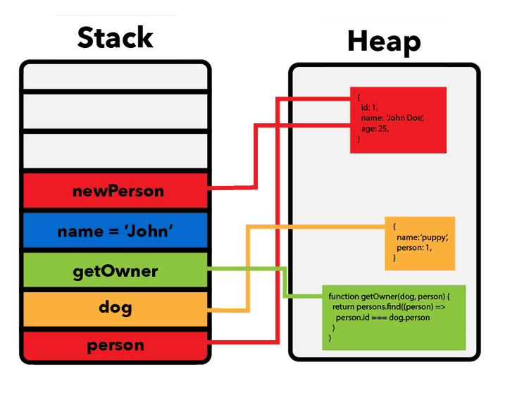

数据类型
数据是什么
- 数据就是信息。
- 数据是程序运行过程中操作的对象。
- 程序的核心任务就是：获取数据、处理数据、输出数据。
- “数据”根据自身特点，可以具有多种形式，如：数字、文本、图像、声音，表格等形式。
数据类型是什么
数据类型定义了变量可以存储什么样的数据。
- 数据的结构：为了表示和操作不同特点的数据，同时为了提升程序的运行性能，会把数据定义为不同类型。
- 数据的存储方式：数据类型决定数据的“存储方式”和“行为”，值类型存在栈中，引用类型则是“地址在栈，内容在堆”。
- 数据的操作方式：计算机程序通过操作数据来工作。程序对不同特点的数据，操作的方式也不同。比如：数字值可以用来计算，文本可以拼接，但不会用于计算。
一门语言支持的类型集也是这门语言最基本的特征。
为什么需要数据类型？
为相应变量使用正确的数据类型很重要。因为：
- 避免错误：类型检查能避免把文本误当成数字计算
- 节省内存：不同类型占用空间不同（如 int 占4字节，bool 占1字节）
- 明确操作：不同类型支持的操作不同（字符串可拼接，数字可加减）
- 使代码更加可维护和可读
C# 中的数据类型的分类
在 C# 中，根据数据的存储方式，数据类型主要分为两大类：
- 值类型（Value Types）：数据存储在内存“栈”中。
- 引用类型（Reference Types）：数据存储在内存“堆”中。

值类型的特点
- 存储：值类型会直接存储在 栈内存 中。
- 复制：复制值类型复制的是值。
常见的值类型：
| 类型 | 示例值 | 说明 |
|---|---|---|
int |
123 |
整数类型（4字节） |
float |
3.14f |
单精度浮点数（4字节） |
double |
3.14159 |
双精度浮点数（8字节） |
bool |
true |
布尔类型（真/假） |
char |
'A' |
单个字符 |
byte |
255 |
8位无符号整数 |
decimal |
10.5m |
高精度小数（财务常用） |
| short, long, sbyte, ushort, uint, ulong | 其他整数类型，分别有不同的字节数和符号范围 | |
自定义结构体（struct）也是值类型。
引用类型（Reference Types）
- 特点：保存的是数据的内存地址，数据存储在 堆内存 中
- 复制的是引用（地址），多个变量可能指向同一数据
常见的引用类型：
| 类型 | 示例值 | 说明 |
|---|---|---|
string |
"Hello" |
字符串类型（不可变） |
object |
任意类型 | 所有类型的基类 |
class |
自定义类 | 用于面向对象编程 |
array |
int[] nums = {1,2} |
数组类型 |
interface |
接口类型 | 定义行为规范 |
自定义类（class）是最典型的引用类型。
特殊类型
| 类型 | 用途 |
|---|---|
var |
编译器自动推断类型（必须初始化） |
dynamic |
动态类型，运行时才检查类型 |
nullable (int?) |
可空类型，用于表示可能为 null 的值类型 |
总结
| 分类 | 举例 | 存储位置 | 特点 |
|---|---|---|---|
| 值类型 | int, bool, float |
栈 | 存储值本身，性能高 |
| 引用类型 | string, object, class |
堆 | 存储地址，多变量可共享同数据 |
| 特殊类型 | var, dynamic, nullable |
编译辅助 | 灵活性更高，需谨慎使用 |